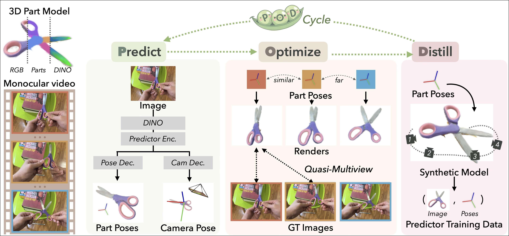

Predict-Optimize-Distill
Self-Improving Cycle for 4D Object Understanding
UC Berkeley
* Denotes Equal Contribution

TL;DR: POD learns to predict 3D part configurations over time from a single video through a self-improving cycle of prediction and optimization.
Understanding Objects Through Long-Form Observation
Humans can quickly recognize how familiar objects move just by looking. For unfamiliar objects, we improve our intuition by watching them in action—turning them around, observing how they move, and gradually getting better at predicting how their parts are configured.
POD (Predict-Optimize-Distill) follows a similar principle. Given a scan of a novel object and a long video of it being manipulated, POD learns an object-specific model that predicts 3D part configurations from individual images. It starts by training a pose predictor on single video frames, refines the predictions through optimization, and then distills the improved results into synthetic training data. Repeating this cycle improves the model’s accuracy and robustness—especially on longer videos or under heavy occlusion.

4D Object Part Understanding
POD takes as input a multi-view scan of an object along with casually captured, long-form human interaction videos, and estimates 3D part poses over time. Unlike previous optimization-only methods such as RSRD, which can struggle with ambiguous viewpoints, POD integrates a self-improving learning cycle into the optimization framework, enabling more consistent and robust 4D part recovery.
How it works
Self-improving cycle
POD utilizes a cycle consisting of a predictive feed-forward model, an optimization stage, and a self-distillation phase to iteratively improve the object part pose predictions.
POD builds a 3D object model from a multi-view scan of the object using 3D Gaussian Splatting and GARField. In the prediction stage, POD estimates the object's part poses from a monocular video with a feed-forward model conditioned on RGB images. Using these predictions it optimizes poses against the monocular video observations, utilizing quasi-multiview supervision by finding matching frames with similar predicted poses and jointly optimizing them. POD then distills the optimized poses back into the predictive model by generating synthetic data from novel views by applying part poses to the object 3D model and rendering RGB observations from different camera poses.
.jpg)
POD's performance increases with the frame number and the loop number.
Citation
If you use this work or find it helpful, please consider citing: (bibtex)